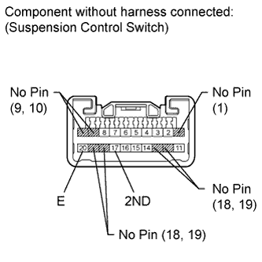
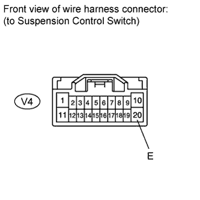
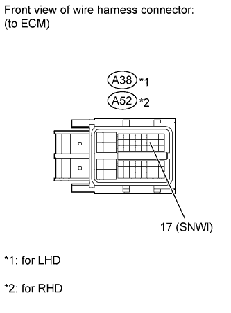

AUTOMATIC TRANSMISSION SYSTEM > Pattern Select Switch 2nd Start Mode Circuit |
| 1.DRIVING TEST |
Start the engine.
Turn the 2ND switch off (normal drive mode).
Confirm vehicle response by driving from a parked position to fully depressing the accelerator pedal.
Turn the 2ND switch on and perform the same check as above.
When driving the vehicle with the 2ND switch on and off, check that there is a difference in acceleration.
|
| ||||
| OK | ||
| ||
| 2.INSPECT PATTERN SELECT (2ND) SWITCH |
 |
Remove the suspension control switch (Click here).
Measure the resistance according to the value(s) in the table below.
| Tester Connection | Switch Condition | Specified Condition |
| 17 (2ND) - 20 (E) | Pattern select (2ND) switch continuously pressed | Below 1 Ω |
| 17 (2ND) - 20 (E) | Pattern select (2ND) switch released | 10 kΩ or higher |
|
| ||||
| OK | |
| 3.CHECK HARNESS AND CONNECTOR (PATTERN SELECT (2ND) SWITCH - BODY GROUND) |
 |
Disconnect the V4 suspension control switch connector.
Measure the resistance according to the value(s) in the table below.
| Tester Connection | Condition | Specified Condition |
| V4-20 (E) - Body ground | Always | Below 1 Ω |
|
| ||||
| OK | |
| 4.CHECK HARNESS AND CONNECTOR (PATTERN SELECT (2ND) SWITCH - ECM) |
 |
Disconnect the A38 ECM connector (for LHD).
Disconnect the A52 ECM connector (for RHD).
Measure the resistance according to the value(s) in the table below.
| Tester Connection | Switch Condition | Specified Condition |
| A38-17 (SNWI) - Body ground | Pattern select (2ND) switch continuously pressed | Below 1 Ω |
| A38-17 (SNWI) - Body ground | Pattern select (2ND) switch released | 10 kΩ or higher |
| Tester Connection | Switch Condition | Specified Condition |
| A52-17 (SNWI) - Body ground | Pattern select (2ND) switch continuously pressed | Below 1 Ω |
| A52-17 (SNWI) - Body ground | Pattern select (2ND) switch released | 10 kΩ or higher |
|
| ||||
| OK | ||
| ||